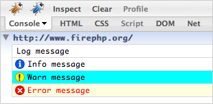
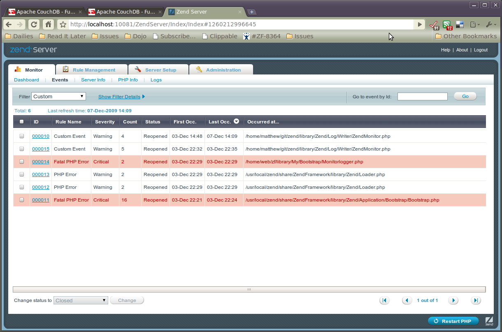
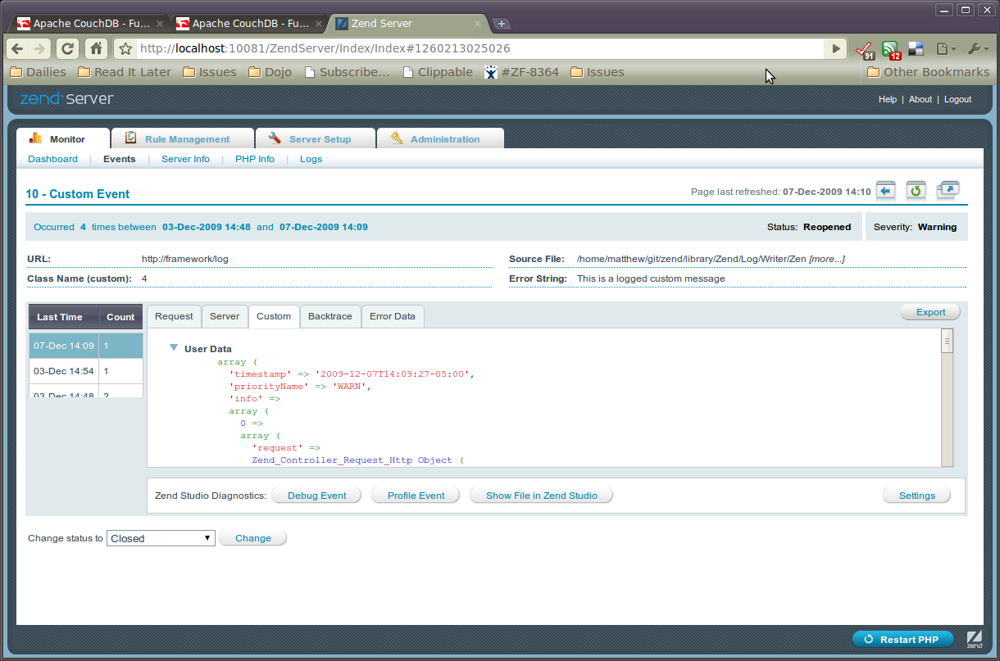

A Writer is an object that inherits from Zend_Log_Writer_Abstract.
A Writer's responsibility is to record log data to a storage backend.
Zend_Log_Writer_Stream sends log
data to a PHP stream.
To write log data to the PHP output buffer, use the URL
php://output. Alternatively, you can send log data directly to a
stream like STDERR (php://stderr).
$writer = new Zend_Log_Writer_Stream('php://output');
$logger = new Zend_Log($writer);
$logger->info('Informational message');
To write data to a file, use one of the Filesystem URLs:
$writer = new Zend_Log_Writer_Stream('/path/to/logfile');
$logger = new Zend_Log($writer);
$logger->info('Informational message');
By default, the stream opens in the append mode ("a").
To open it with a different mode, the Zend_Log_Writer_Stream
constructor accepts an optional second parameter for the mode.
The constructor of Zend_Log_Writer_Stream also accepts an
existing stream resource:
$stream = @fopen('/path/to/logfile', 'a', false);
if (! $stream) {
throw new Exception('Failed to open stream');
}
$writer = new Zend_Log_Writer_Stream($stream);
$logger = new Zend_Log($writer);
$logger->info('Informational message');
You cannot specify the mode for existing stream resources. Doing so
causes a Zend_Log_Exception to be thrown.
Zend_Log_Writer_Db writes log information to a database table
using Zend_Db. The constructor of
Zend_Log_Writer_Db receives a
Zend_Db_Adapter instance, a table name, and a mapping of database
columns to event data items:
$params = array ('host' => '127.0.0.1',
'username' => 'malory',
'password' => '******',
'dbname' => 'camelot');
$db = Zend_Db::factory('PDO_MYSQL', $params);
$columnMapping = array('lvl' => 'priority', 'msg' => 'message');
$writer = new Zend_Log_Writer_Db($db, 'log_table_name', $columnMapping);
$logger = new Zend_Log($writer);
$logger->info('Informational message');
The example above writes a single row of log data to the database table named 'log_table_name' table. The database column named 'lvl' receives the priority number and the column named 'msg' receives the log message.
Zend_Log_Writer_Firebug sends log
data to the Firebug
Console.

All data is sent via the Zend_Wildfire_Channel_HttpHeaders component
which uses HTTP headers to ensure the page content is not disturbed.
Debugging AJAX requests that require clean JSON and
XML responses is possible with this approach.
Requirements:
Firefox Browser ideally version 3 but version 2 is also supported.
Firebug Firefox Extension which you can download from https://addons.mozilla.org/en-US/firefox/addon/1843.
FirePHP Firefox Extension which you can download from https://addons.mozilla.org/en-US/firefox/addon/6149.
Example 44.1. Logging with Zend_Controller_Front
// Place this in your bootstrap file before dispatching your front controller
$writer = new Zend_Log_Writer_Firebug();
$logger = new Zend_Log($writer);
// Use this in your model, view and controller files
$logger->log('This is a log message!', Zend_Log::INFO);
Example 44.2. Logging without Zend_Controller_Front
$writer = new Zend_Log_Writer_Firebug();
$logger = new Zend_Log($writer);
$request = new Zend_Controller_Request_Http();
$response = new Zend_Controller_Response_Http();
$channel = Zend_Wildfire_Channel_HttpHeaders::getInstance();
$channel->setRequest($request);
$channel->setResponse($response);
// Start output buffering
ob_start();
// Now you can make calls to the logger
$logger->log('This is a log message!', Zend_Log::INFO);
// Flush log data to browser
$channel->flush();
$response->sendHeaders();
Built-in and user-defined priorities can be styled with the
setPriorityStyle() method.
$logger->addPriority('FOO', 8);
$writer->setPriorityStyle(8, 'TRACE');
$logger->foo('Foo Message');
The default style for user-defined priorities can be set with the
setDefaultPriorityStyle() method.
$writer->setDefaultPriorityStyle('TRACE');
The supported styles are as follows:
Table 44.2. Firebug Logging Styles
| Style | Description |
|---|---|
LOG |
Displays a plain log message |
INFO |
Displays an info log message |
WARN |
Displays a warning log message |
ERROR |
Displays an error log message that increments Firebug's error count |
TRACE |
Displays a log message with an expandable stack trace |
EXCEPTION |
Displays an error long message with an expandable stack trace |
TABLE |
Displays a log message with an expandable table |
While any PHP variable can be logged with the built-in priorities, some special formatting is required if using some of the more specialized log styles.
The LOG, INFO, WARN,
ERROR and TRACE styles require no special
formatting.
To log a Zend_Exception simply pass the exception object to the
logger. It does not matter which priority or style you have set as the exception is
automatically recognized.
$exception = new Zend_Exception('Test exception');
$logger->err($exception);
You can also log data and format it in a table style. Columns are automatically recognized and the first row of data automatically becomes the header.
$writer->setPriorityStyle(8, 'TABLE');
$logger->addPriority('TABLE', 8);
$table = array('Summary line for the table',
array(
array('Column 1', 'Column 2'),
array('Row 1 c 1',' Row 1 c 2'),
array('Row 2 c 1',' Row 2 c 2')
)
);
$logger->table($table);
Zend_Log_Writer_Mail writes log entries in an email message
by using Zend_Mail. The Zend_Log_Writer_Mail
constructor takes a Zend_Mail object, and an optional
Zend_Layout object.
The primary use case for Zend_Log_Writer_Mail is notifying
developers, systems administrators, or any concerned parties of errors
that might be occurring with PHP-based scripts.
Zend_Log_Writer_Mail was born out of the idea that if
something is broken, a human being needs to be alerted of it immediately
so they can take corrective action.
Basic usage is outlined below:
$mail = new Zend_Mail();
$mail->setFrom('errors@example.org')
->addTo('project_developers@example.org');
$writer = new Zend_Log_Writer_Mail($mail);
// Set subject text for use; summary of number of errors is appended to the
// subject line before sending the message.
$writer->setSubjectPrependText('Errors with script foo.php');
// Only email warning level entries and higher.
$writer->addFilter(Zend_Log::WARN);
$log = new Zend_Log();
$log->addWriter($writer);
// Something bad happened!
$log->error('unable to connect to database');
// On writer shutdown, Zend_Mail::send() is triggered to send an email with
// all log entries at or above the Zend_Log filter level.
Zend_Log_Writer_Mail will render the email body as plain
text by default.
One email is sent containing all log entries at or above the filter level. For example, if warning-level entries an up are to be emailed, and two warnings and five errors occur, the resulting email will contain a total of seven log entries.
A Zend_Layout instance may be used to generate the
HTML portion of a multipart email. If a
Zend_Layout instance is in use,
Zend_Log_Writer_Mail assumes that it is being used to render
HTML and sets the body HTML for the message as
the Zend_Layout-rendered value.
When using Zend_Log_Writer_Mail with a
Zend_Layout instance, you have the option to set a
custom formatter by using the setLayoutFormatter()
method. If no Zend_Layout-specific entry formatter was
specified, the formatter currently in use will be used. Full usage
of Zend_Layout with a custom formatter is outlined
below.
$mail = new Zend_Mail();
$mail->setFrom('errors@example.org')
->addTo('project_developers@example.org');
// Note that a subject line is not being set on the Zend_Mail instance!
// Use a simple Zend_Layout instance with its defaults.
$layout = new Zend_Layout();
// Create a formatter that wraps the entry in a listitem tag.
$layoutFormatter = new Zend_Log_Formatter_Simple(
'<li>' . Zend_Log_Formatter_Simple::DEFAULT_FORMAT . '</li>'
);
$writer = new Zend_Log_Writer_Mail($mail, $layout);
// Apply the formatter for entries as rendered with Zend_Layout.
$writer->setLayoutFormatter($layoutFormatter);
$writer->setSubjectPrependText('Errors with script foo.php');
$writer->addFilter(Zend_Log::WARN);
$log = new Zend_Log();
$log->addWriter($writer);
// Something bad happened!
$log->error('unable to connect to database');
// On writer shutdown, Zend_Mail::send() is triggered to send an email with
// all log entries at or above the Zend_Log filter level. The email will
// contain both plain text and HTML parts.
The setSubjectPrependText() method may be used in place
of Zend_Mail::setSubject() to have the email subject
line dynamically written before the email is sent. For example, if
the subject prepend text reads "Errors from script", the subject of
an email generated by Zend_Log_Writer_Mail with two
warnings and five errors would be "Errors from script (warn = 2;
error = 5)". If subject prepend text is not in use via
Zend_Log_Writer_Mail, the Zend_Mail
subject line, if any, is used.
Sending log entries via email can be dangerous. If error conditions are being improperly handled by your script, or if you're misusing the error levels, you might find yourself in a situation where you are sending hundreds or thousands of emails to the recipients depending on the frequency of your errors.
At this time, Zend_Log_Writer_Mail does not provide any
mechanism for throttling or otherwise batching up the messages.
Such functionality should be implemented by the consumer if
necessary.
Again, Zend_Log_Writer_Mail's primary goal is to
proactively notify a human being of error conditions. If those
errors are being handled in a timely fashion, and safeguards are
being put in place to prevent those circumstances in the future,
then email-based notification of errors can be a valuable tool.
Zend_Log_Writer_Syslog writes log entries to the
system log (syslog). Internally, it proxies to PHP's
openlog(),
closelog(), and
syslog() functions.
One useful case for Zend_Log_Writer_Syslog
is for aggregating logs from clustered machines via the system log
functionality. Many systems allow remote logging of system events, which
allows system administrators to monitor a cluster of machines from a
single log file.
By default, all syslog messages generated are prefixed with the string "Zend_Log". You may specify a different "application" name by which to identify such log messages by either passing the application name to the constructor or the application accessor:
// At instantiation, pass the "application" key in the options:
$writer = new Zend_Log_Writer_Syslog(array('application' => 'FooBar'));
// Any other time:
$writer->setApplicationName('BarBaz');
The system log also allows you to identify the "facility," or application type, logging the message; many system loggers will actually generate different log files per facility, which again aids administrators monitoring server activity.
You may specify the log facility either in the constructor or via an
accessor. It should be one of the openlog()
constants defined on the openlog()
manual page.
// At instantiation, pass the "facility" key in the options:
$writer = new Zend_Log_Writer_Syslog(array('facility' => LOG_AUTH));
// Any other time:
$writer->setFacility(LOG_USER);
When logging, you may continue to use the default
Zend_Log priority constants; internally, they are
mapped to the appropriate syslog() priority
constants.
Zend_Log_Writer_ZendMonitor allows you to log events via Zend
Server's Monitor API. This allows you to aggregate log messages for your
entire application environment in a single location. Internally, it simply uses the
monitor_custom_event() function from the Zend Monitor
API.
One particularly useful feature of the Monitor API is that it allows you to specify arbitrary custom information alongside the log message. For instance, if you wish to log an exception, you can log not just the exception message, but pass the entire exception object to the function, and then inspect the object within the Zend Server event monitor.
![[Note]](images/note.png) |
Zend Monitor must be installed and enabled |
|---|---|
In order to use this log writer, Zend Monitor must be both installed and enabled.
However, it is designed such that if Zend Monitor is not detected, it will simply act as
a |
Instantiating the ZendMonitor log writer is trivial:
$writer = new Zend_Log_Writer_ZendMonitor(); $log = new Zend_Log($writer);
Then, simply log messages as usual:
$log->info('This is a message');
If you want to specify additional information to log with the event, pass that information in a second parameter:
$log->info('Exception occurred', $e);
The second parameter may be a scalar, object, or array; if you need to pass multiple pieces of information, the best way to do so is to pass an associative array.
$log->info('Exception occurred', array(
'request' => $request,
'exception' => $e,
));
Within Zend Server, your event is logged as a "custom event". From the "Monitor" tab, select the "Events" sub-item, and then filter on "Custom" to see custom events.

Events in Zend Server's Monitor dashboard
In this screenshot, the first two events listed are custom events logged via the
ZendMonitor log writer. You may then click on an event to view all
information related to it.

Event detail in Zend Server's Monitor
Clicking on the "Custom" sub tab will detail any extra information you logged by passing the
second argument to the logging method. This information will be logged as the
info subkey; you can see that the request object was logged in this
example.
|
Integration with Zend_Application |
|---|---|
|
By default, the zf.sh and zf.bat commands add
configuration for the
As noted previously, if the Monitor API is not detected in your
PHP installation, the logger will simply act as a
|
The Zend_Log_Writer_Null is a stub that does not write log data
to anything. It is useful for disabling logging or stubbing out logging during tests:
$writer = new Zend_Log_Writer_Null;
$logger = new Zend_Log($writer);
// goes nowhere
$logger->info('Informational message');
The Zend_Log_Writer_Mock is a very simple writer that records
the raw data it receives in an array exposed as a public property.
$mock = new Zend_Log_Writer_Mock;
$logger = new Zend_Log($mock);
$logger->info('Informational message');
var_dump($mock->events[0]);
// Array
// (
// [timestamp] => 2007-04-06T07:16:37-07:00
// [message] => Informational message
// [priority] => 6
// [priorityName] => INFO
// )
To clear the events logged by the mock, simply set $mock->events = array().
There is no composite Writer object. However, a Log instance can write
to any number of Writers. To do this, use the addWriter()
method:
$writer1 = new Zend_Log_Writer_Stream('/path/to/first/logfile');
$writer2 = new Zend_Log_Writer_Stream('/path/to/second/logfile');
$logger = new Zend_Log();
$logger->addWriter($writer1);
$logger->addWriter($writer2);
// goes to both writers
$logger->info('Informational message');